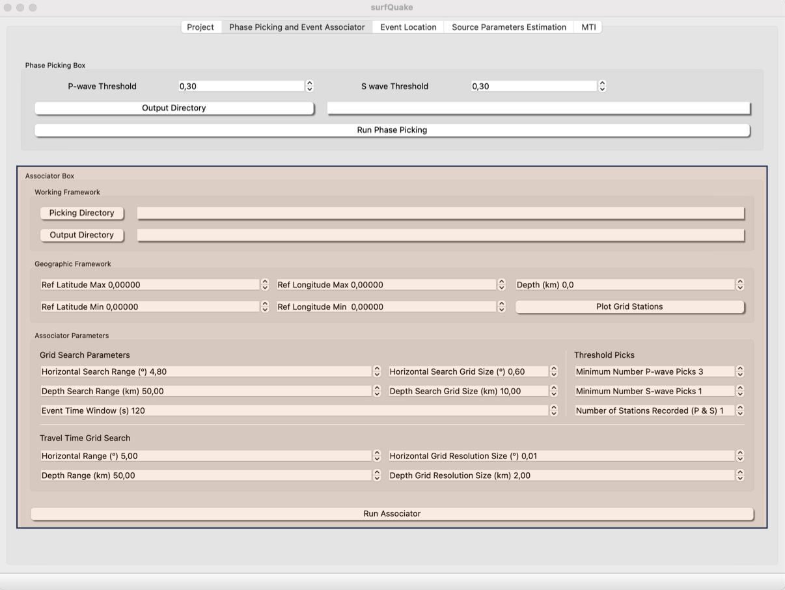

Arraival times Assocotiation
The main goal of this tool is to associate the arrival times of different P- and S-waves to the their corresponding events. The associator algorythm used in surfquake is REAL (Zhang et al., 2019). The user needs to set the input parameters and point to the folder where the picks have been storaged. In th following sections it will be describe the surfquake imprementation of REAL, for a full description of the parameters visit REAL cookbook
Events Associator GUI
This is a screenshot of the Associator GUI.

The basics settings to associate inside a medium size region (300 x 300) km are show in the upper screenshot.
- Picking Directory: Root path to the folders containing the picking files. This files are automatically generated after running the picking tool.
-
Output Directory: Path to the forlder where the users wants the results of the arrival times association. Picking file nll_input.txt to Event Locaion tool will be also saved in this folder.
-
Geographic Framework: Set the coordinates of your study region and remind loading the metadata from project tool. You can plot a map to be sure tour settings are ok.
- Associator Parameters: These parameters are described in this link.
Config files
The parametrization of the Event Assocciator tool can be storaged in a file.ini. An example of this file is as follows:
[GEOGRAPHIC_FRAME]
LAT_REF_MAX = 43.0000
LAT_REF_MIN = 42.0000
LON_REF_MIN = 0.8000
LON_REF_MAX = 2.2000
DEPTH = 20.00
#
[GRID_SEARCH_PARAMETERS]
HORIZONTAL_SEARCH_RANGE = 4.80
DEPTH_SEARCH_RANGE = 50.00
EVENT_TIME_WINDOW = 120.00
HORIZONTAL_SEARCH_GRID_SIZE = 0.60
DEPTH_SEARCH_GRID_SIZE = 10.00
#
[TRAVEL_TIME_GRID_SEARCH]
HORIZONTAL_RANGE = 5.00
DEPTH_RANGE = 50.00
DEPTH_GRID_RESOLUTION_SIZE = 2.00
HORIZONTAL_GRID_RESOLUTION_SIZE = 0.01
#
[THRESHOLD_PICKS]
MIN_NUM_P_WAVE_PICKS = 3
MIN_NUM_S_WAVE_PICKS = 1
NUM_STATIONS_RECORDED = 1
Events Associator from CLI
Usage
>> surfquake associator [-h] -i INVENTORY_FILE_PATH -p DATA_DIR -c CONFIG_FILE_PATH -w WORK_DIR_PATH -s SAVE_DIR [-v]
Interactive help
Run Phase Picker from CLI
>> surfquake associate -i /surfquake_test/metadata/inv_all.xml -p /surfquake_test/test_picking_final -c /surfquake_test/config_files/real_config.ini
Events Associator from Library
Classes
class RealCore:
def __init__(self, metadata_file: str, real_config: Union[str, RealConfig], picking_directory: str, working_directory: str,
output_directory: str):
"""
----------
Parameters
----------
metadata_file str: Path to the inventory information of stations coordinates and instrument description
real_config: Either the path to a real_config.ini or a RealConfig object.
picking_directory str: Root path to the folder wher picks P and S wave arrival time picks are storage
working_directory str: Root path to the folder that the associator uses to save intermediate files sucha as travel-times.
"""